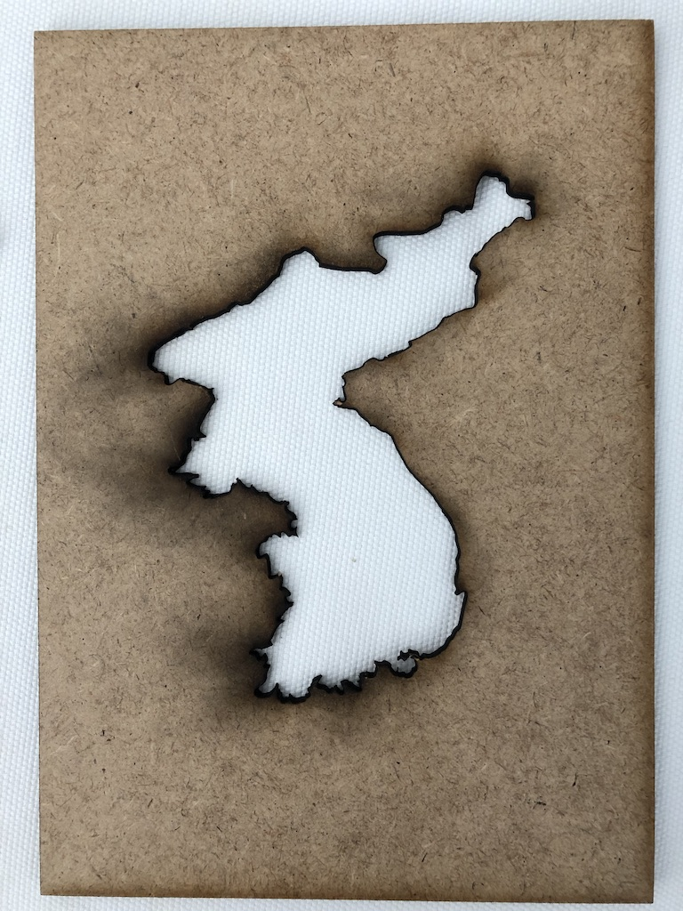
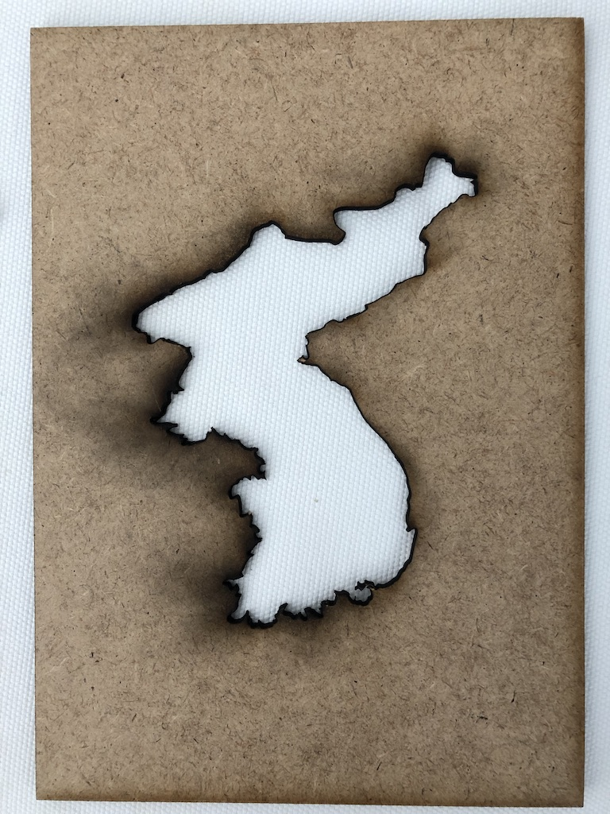
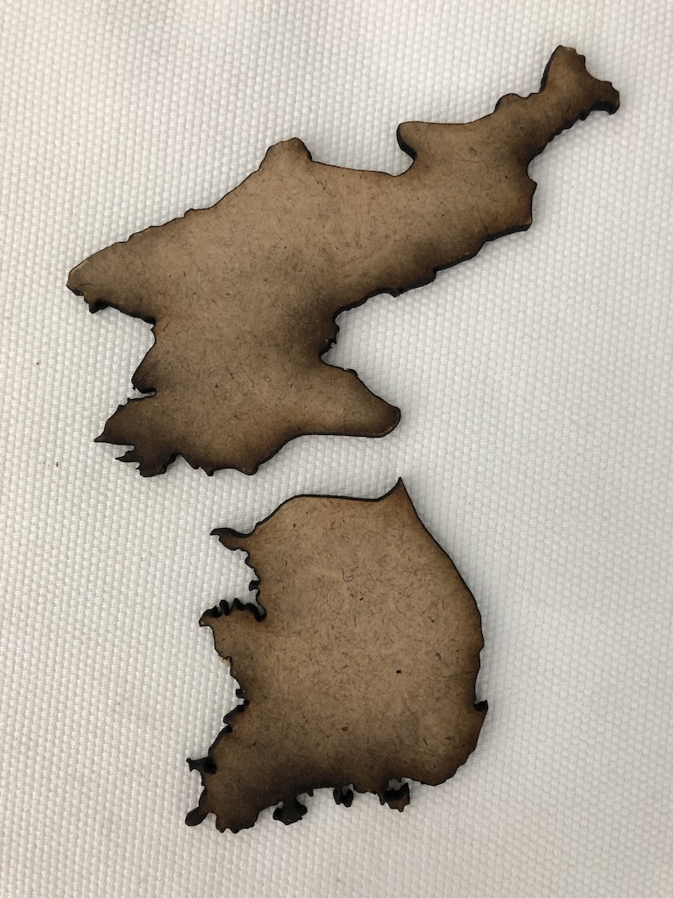
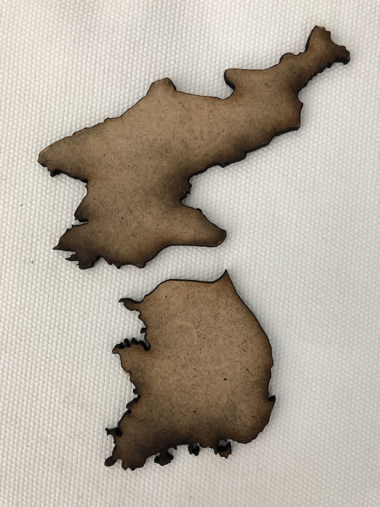
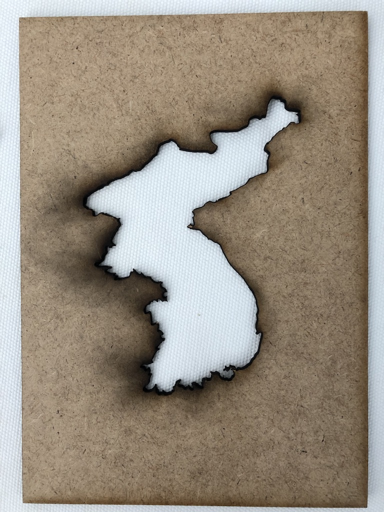
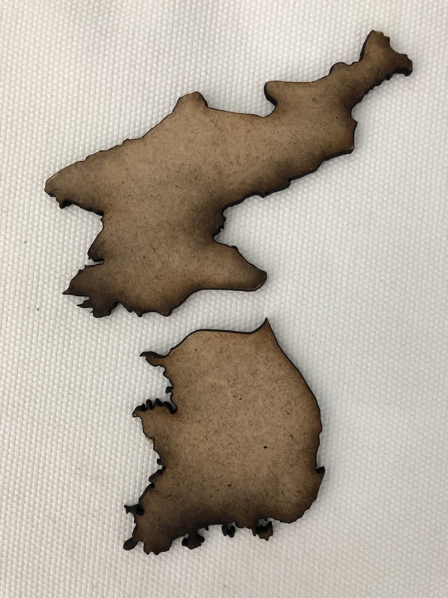

My iterations

 
 
 When anybody asks,
'Where are you from?'
I say, 'Korea.'
Not, 'South Korea,'
just, 'Korea.'
My Grandma is 99.
Her two eldest daughters live in North Korea.
They were separated over 50 years ago.
When I lived in Germany,
I celebrated Lunar New Year with Koreans living in Munich.
There, an older German gentleman shared with me,
'As a German, I too understood the pains of living in a war-torn country.'
This is my response to that encounter.
When I recognized a common pain in a foreign land.
The helplessness felt in the face of a historic problem.
The miniscule probability of being personally impacted by an international war.
And the dissonance of carrying on with our lives amidst such blatant injustice
This is my attempt
to juxtapose today's North/South borders of Korea
with the long gone West/East borders of Germany.
My iterations

